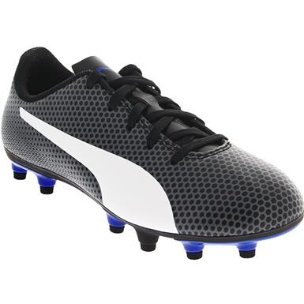
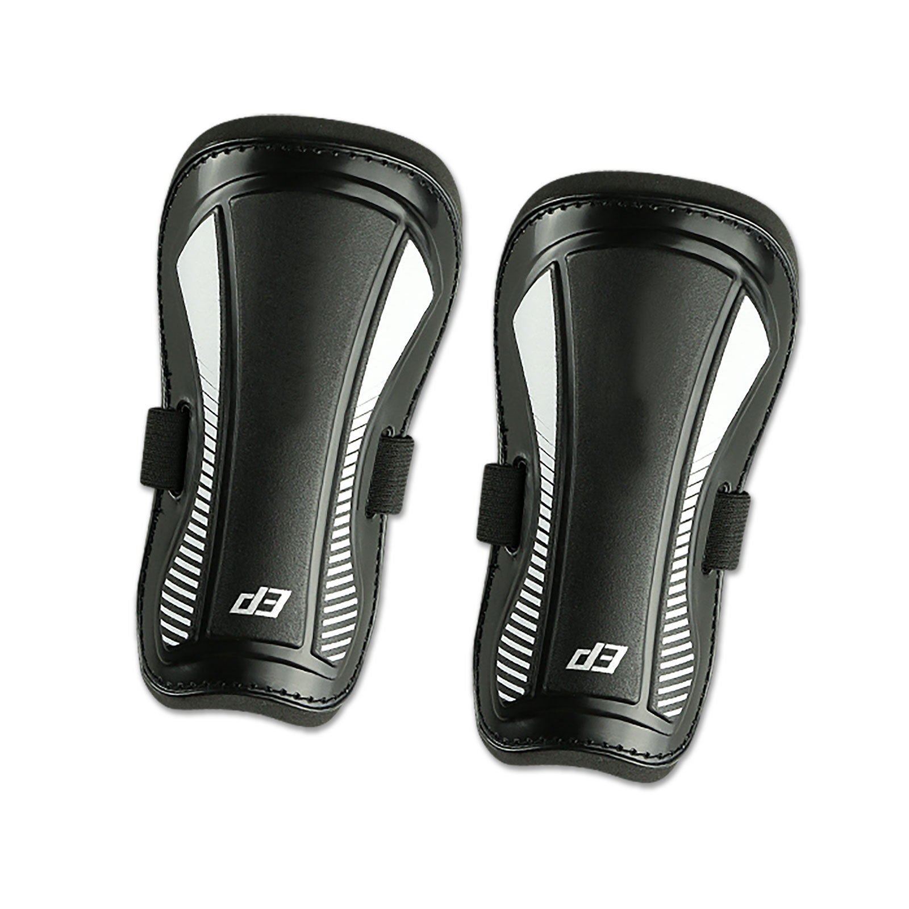
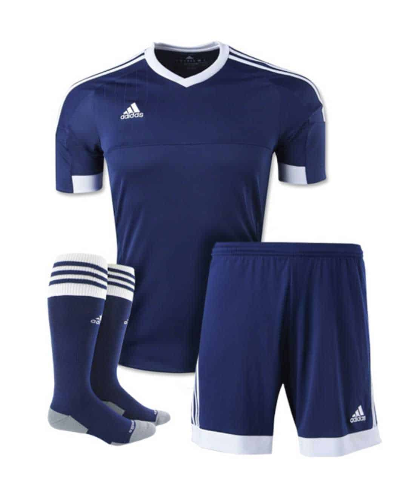

Essential Soccer
Cleats
Soccer shoes, sometimes referred to as cleats, are one of the most important components of your child's soccer gear, points out the book, "The Parent's Complete Guide to Soccer." Depending on the surface of the field your child will be playing on, she'll need a certain type of cleats on the bottom of her shoes. If she's playing on hard surfaces, longer, wedge-shaped cleats are best. Softer ground requires shorter cleats and playing on artificial turf won't require cleats at all. You can purchase shoes with removable cleats if your child will be playing on a number of surfaces.
Shin Guard
Shin pads are a requirement for most official soccer leagues, and come in two varieties. One type of shin pad straps around the back of the calf with Velcro, while others slip over the foot like a sock. Choose whichever your child is most comfortable with, remembering that it can change the way your child's shoes fits. Socks must be long enough to cover the entire shin pad during game play, and will likely be offered as part of your child's uniform.
Uniform
If your child is playing with a school or league team, you'll likely need to pay for a uniform. Sometimes, uniforms are sponsored by local businesses and your registration fee will cover the expense. All children on the team must wear matching uniforms, with the goalie dressed in a clearly different shirt that identifies him as the goalie. Shorts may be purchased separately. They are typically loose, black shorts that fall to the mid-thigh area. Look for soccer brands like Adidas, Nike and Umbro.
Ball
While your child won't need to bring her own ball to practices and games, it's helpful for her to have the right ball at home for practice. Certain leagues, like those for children under 12 and indoor leagues, will require the use of a smaller size three or four ball. A size three ball is the smallest and is 23 to 24 inches in circumference. A size four ball, used for children between eight and 12 years, is 25 to 26 inches in circumference. A size five is a standard soccer ball, 27 to 28 inches in circumference.